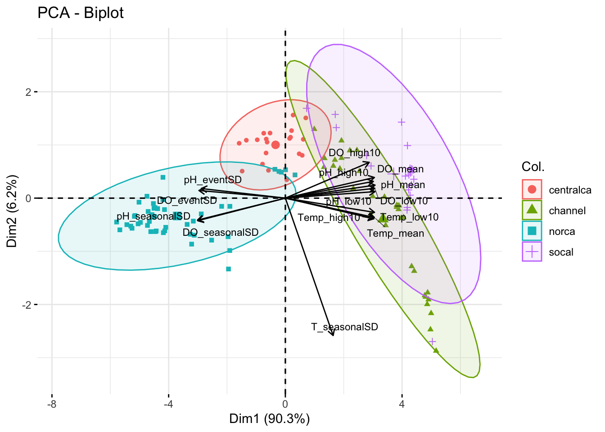
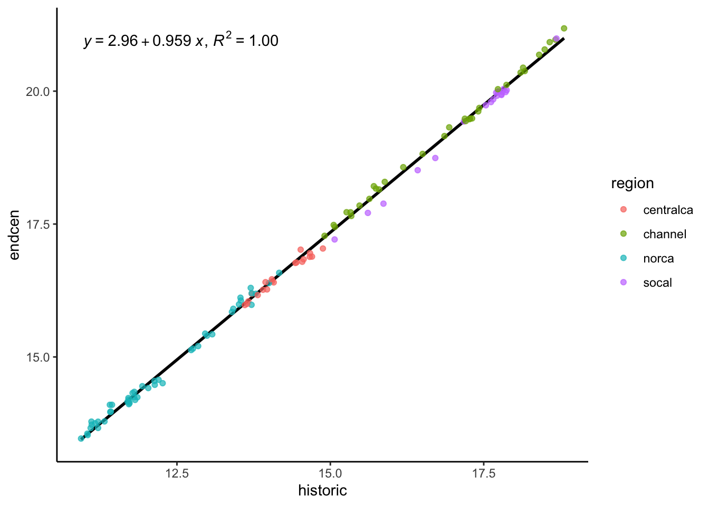
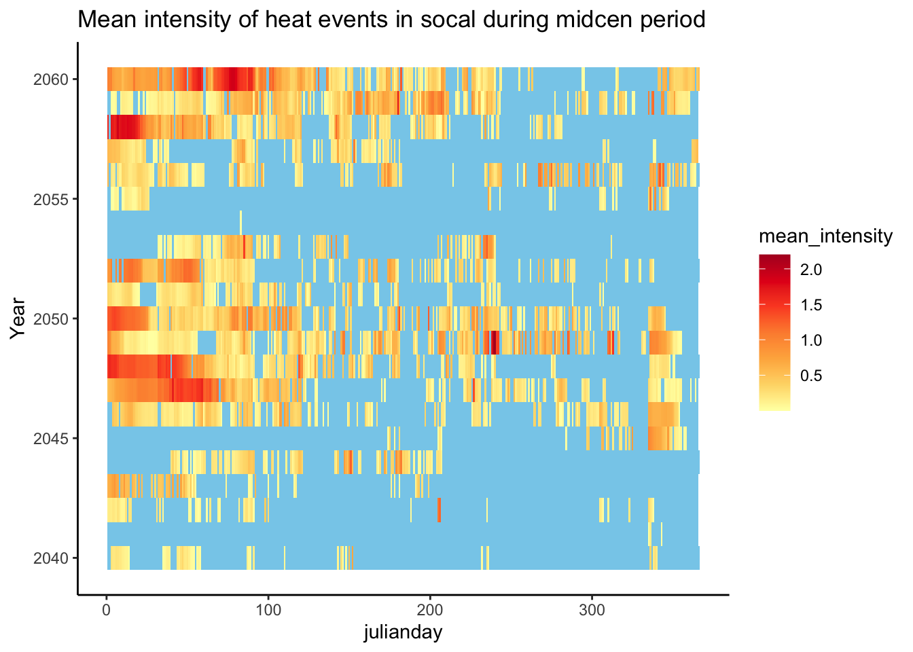
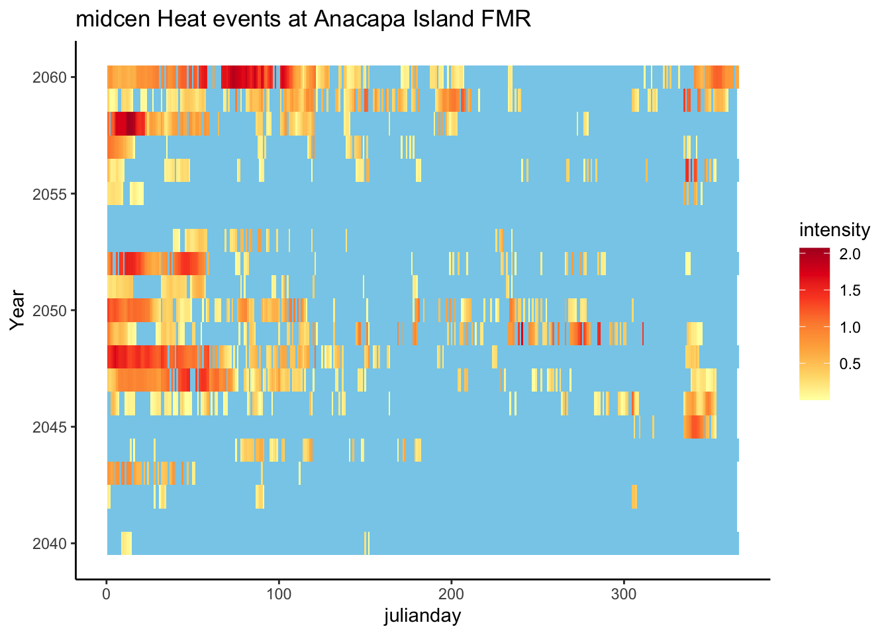
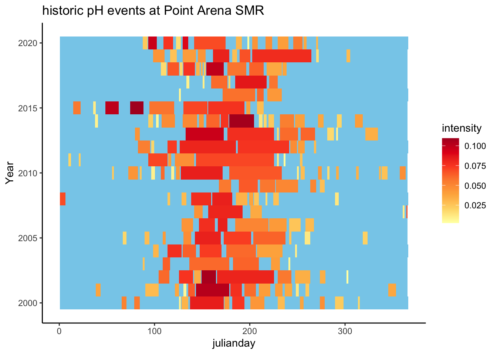
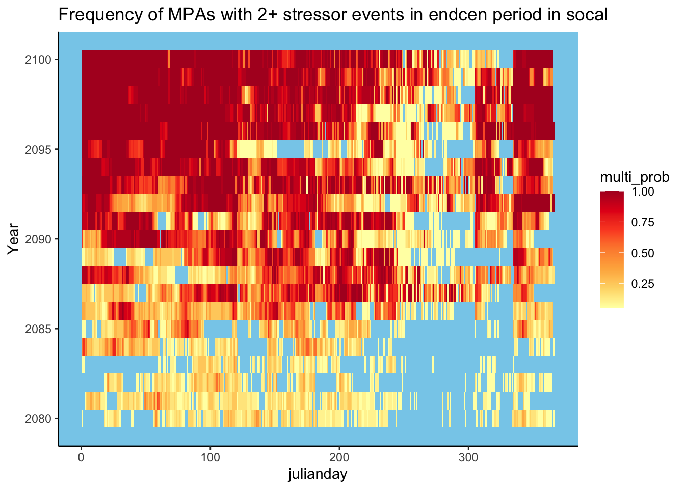
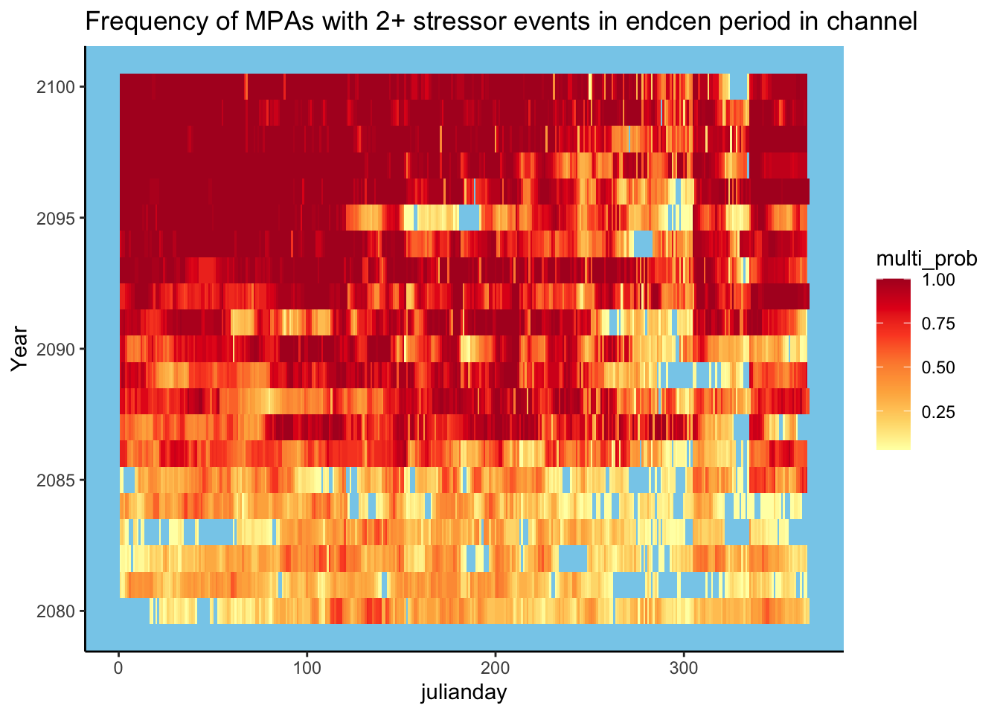
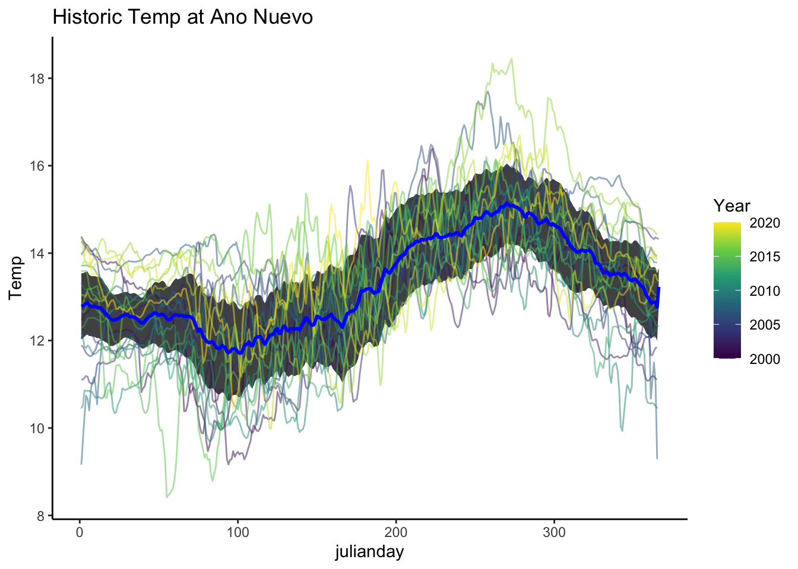
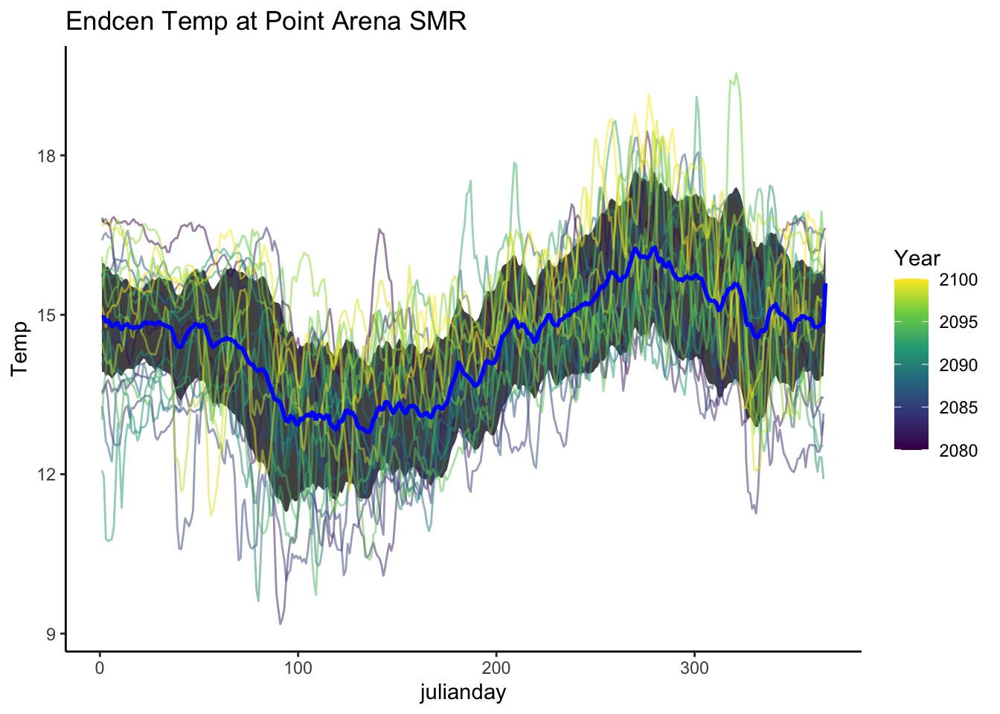

Code
knitr::opts_chunk$set(warning = FALSE, message = FALSE)knitr::opts_chunk$set(warning = FALSE, message = FALSE)Characterization of exposure of California MPAs to future pH, DO, and temperature using IPSL model predictions.
Load required libraries, read IPSL MPA projections file, and assign MPAs to regions (Northern CA, Central CA, Southern CA, Channel Islands).
#Read mpa data, convert DO units, add a column for time period, and one for difference between mid/end cen and historic.
mpa <- read_csv(here("data/processeddata/model/IPSLmpa.csv")) %>%
mutate(DO_mmolL = DO_surf/1000,
DO_mgL = convert_DO(DO_mmolL, from = "mmol/L", to = "mg/L")) %>%
filter(Year <= 2020|
Year >= 2040 & Year <= 2060|
Year >= 2080 & Year <= 2100) %>%
mutate(period = case_when((Year <= 2020) ~ "historic",
(Year %in% c(2040:2060)) ~ "midcen",
(Year %in% c(2080:2100)) ~ "endcen")) %>%
select(-T_bot, -DO_bot, -pH_bot,-DO_surf,-DO_mmolL) %>%
rename(Temp = T_surf,
DO = DO_mgL,
pH = pH_surf) %>%
mutate(Date = make_date(Year, Month, Day)) %>%
mutate(julianday = yday(Date))
mpa$File <- substr(mpa$File, 1, nchar(mpa$File)-4)#add regions here!
mpa_centroids<- read_csv(here("data/rawdata/MPA_polygons.csv")) %>%
select(-Area_sq_mi, -Type)
mpa_centroids$File <- sub("^", "tphdo_mpa_", mpa_centroids$OBJECTID )
mpa_centroids <- mpa_centroids %>%
mutate(region = ifelse(degy >= 37.29, "norca",
ifelse(degy > 34.8, "centralca",
ifelse("degy" < 34.274 & "degx" < -119.220, "channelisl" ,
"socal"))))
channel <- c("Anacapa Island FMCA", "Anacapa Island FMR", "Anacapa Island SMCA", "Anacapa Island SMR", "Anacapa Island Special Closure",
"Arrow Point to Lion Head Point SMCA", "Begg Rock SMR", "Blue Cavern Offshore SMCA", "Blue Cavern Onshore SMCA (No-Take)",
"Carrington Point SMR", "Casino Point SMCA (No-Take)", "Cat Harbor SMCA", "Farnsworth Offshore SMCA", "Farnsworth Onshore SMCA",
"Footprint FMR", "Footprint SMR", "Gull Island FMR", "Gull Island SMR", "Harris Point FMR", "Harris Point SMR", "Judith Rock SMR",
"Long Point SMR", "Lover’s Cove SMCA", "Painted Cave SMCA", "Richardson Rock FMR", "Richardson Rock SMR", "San Miguel Island Special Closure",
"Santa Barbara Island FMR", "Santa Barbara Island SMR", "Scorpion FMR", "Scorpion SMR", "Skunk Point SMR", "South Point FMR", "South Point SMR")
mpa_centroids$region[mpa_centroids$NAME %in% channel] <- "channel"
mpa <- merge(mpa, mpa_centroids, by = "File")Create a climatology (for each MPA within a time period, Jan values averaged over all years - same for each month), so each MPA has one value per month that is averaged over all of the years. Seasonal SD is calculated later in summary stat section, and is the variation across these 12 climatologies for each MPA, representing the seasonal cycle.
#calculate climatology for each MPA for each time period
mpa_climatology <- mpa %>%
group_by(File, Month, period) %>%
summarise(T_clim = mean(Temp),
pH_clim = mean(pH),
DO_clim = mean(DO))To understand event-based variation (not attributed to the seasonal cycle), we need to find the deviation of actual daily values from a climatological value. To do so, a mock dataset with julian day climatologies is created by interpolating monthly climatology values. Actual daily values are subtracted from this interpolated dataset at the daily scale. The standard deviation of this difference is the event-based SD, which is calculated in the summary stat section.
Q: instead of interpolating from monthly climatologies to create daily climatologies, why not average daily values to get daily climatologies?
Setup for interpolation:
Need to create a day 1 and day 365 proxy. The approx function can only interpolate not extrapolate. The approx function is used to interpolate between the 15th day of each month, and day 1 and day 365 are used to interpolate the first 15 and last 15 days of the year.
##below creates empty vectors as big as we need (365 days per mpa) for each variable and each mpa. julianday is dates 1-365 as many mpa times
mpaslist = unique(mpa$File)
mpas = rep(NA, 365*121)
julianday = rep(1:365, 121)
interp = rep(NA, 365*121)
#Set up a vector of julian day assignment for the 15th of each month and the first and last day of the year
x_in <- yday(as.Date(c("2001-01-01",
"2001-01-15","2001-02-15","2001-03-15","2001-04-15",
"2001-05-15","2001-06-15","2001-07-15","2001-08-15",
"2001-09-15","2001-10-15","2001-11-15","2001-12-15",
"2001-12-31")))
# creating a list of all the days of the year to interpolate to.
x_out <- (1:365) interpolate <- function(periodt, variable){
mpa_period_climatology <- mpa_climatology %>%
filter(period == periodt)
for (i in 1:length(mpaslist)){ #for each mpa
d <- mpa_period_climatology %>% #for given mpa iterating through, selects var from clim
filter(File == mpaslist[i]) %>%
select(File,Month, !!sym(variable))
#use a weighted average. for dec 31, slightly more than half weight to dec (denoted by [12,3] index - 12 is the month, third column is the variable's clim value), little less than half weight to jan. for jan 1, slightly more weight to jan, little less weight to dec.
Dec31 = as.numeric(( ((16/30) * (d[12,3])) +
((14/30) * d[1,3]) ))
Jan1 = as.numeric(( ((14/30) * (d[12,3])) +
((16/30) * d[1,3]) ))
y_in <- c(Jan1, d[[variable]], Dec31)
mod <- approx(x = x_in, #days to interpolate from
y = y_in, #temp values per day in x_in
xout = x_out) #1-365 days to interpolate out to
#I don't understand this part
mpas[((i-1)*365+1):(i*365)] <- mpaslist[i] #rep(mpaslist[1], 365)
interp[((i-1)*365+1):(i*365)] <- mod$y
}
df <- data.frame(mpas, julianday, interp) %>%
rename(File = mpas) %>%
mutate(period = periodt) %>%
rename(!!sym(variable) := interp)
assign(x = paste("interp",variable,periodt, sep="_"), value = df, envir = globalenv())
}interpolate("historic", "T_clim")
interpolate("midcen", "T_clim")
interpolate("endcen", "T_clim")
interpolate("historic", "pH_clim")
interpolate("midcen", "pH_clim")
interpolate("endcen", "pH_clim")
interpolate("historic", "DO_clim")
interpolate("midcen", "DO_clim")
interpolate("endcen", "DO_clim")interpolated_temp <- rbind(interp_T_clim_historic,
interp_T_clim_midcen,
interp_T_clim_endcen)
interpolated_pH <- rbind(interp_pH_clim_historic,
interp_pH_clim_midcen,
interp_pH_clim_endcen)
interpolated_DO <- rbind(interp_DO_clim_historic,
interp_DO_clim_midcen,
interp_DO_clim_endcen)Generate summary statistics for T, pH, and DO.
Seasonal SD is across climatologies (monthly values averaged over all years resulting in 12 values per MPA - one per month - the seasonal SD is the variation across these values).
Event SD is calculated based on the deviation of daily values from interpolated daily values. The standard deviation per MPA is across all of the daily differences between daily value and interpolated values filtered for upwelling months May, June, July, August, and September (filtered, not grouped by upwelling month - the Event SD captures variation of the deviations at a daily scale).
Additional summary stats include the mean, lower 10th percentile, and upper 10th percentile.
#calculate seasonal SD
seasonal_SD <- mpa_climatology %>%
group_by(File, period) %>%
summarise(T_seasonalSD = sd(T_clim),
pH_seasonalSD = sd(pH_clim),
DO_seasonalSD = sd(DO_clim))
#put all summary stats together - first, calculate event SD
sum <- mpa %>%
#merge interpolated climatologies to mpa. (used to calculate event sd)
merge(interpolated_temp, by = c("File", "julianday", "period")) %>%
merge(interpolated_pH, by = c("File", "julianday", "period")) %>%
merge(interpolated_DO, by = c("File", "julianday", "period")) %>%
#subtract actual values - interpolated climatology values
#filtered for only upwelling months!!
mutate(temp_deviation = Temp - T_clim,
pH_deviation = pH - pH_clim,
DO_deviation = DO - DO_clim) %>%
filter(Month == c(5,6,7,8,9)) %>%
#find event based SD
group_by(File, period) %>%
mutate(T_eventSD = sd(temp_deviation),
pH_eventSD = sd(pH_deviation),
DO_eventSD = sd(DO_deviation)) %>%
ungroup() %>%
select(-T_clim, -pH_clim, -DO_clim, -temp_deviation,
-pH_deviation, -DO_deviation) %>%
#merge seasonal SD
merge(seasonal_SD, by = c("File", "period")) %>%
#adding other summary stats - mean, low 10th and upper 10th percentiles
group_by(File, period) %>%
mutate(across(c(Temp, DO, pH),
list(mean = mean,
low10 = ~ quantile(.x, 0.1),
high10 = ~quantile(.x,0.9)))) %>%
# to get to scale of one row per mpa
select(-...1, -Temp, -pH, -DO, -julianday, -Year, -Month, -Day) %>%
distinct(File, .keep_all = TRUE) %>% ungroup()PCA of all summary stats (mean, lower 10th percentile, upper 10th percentile, seasonal SD, event SD) clustered by regions within specified time period.
make_pca <- function(df, periodt){
sum_period <- df %>% filter(period == periodt)
sumsub <- sum_period %>% select(-OBJECTID,-NAME, -File, -SHORTNAME, -degx,
-degy, -region, -period, -Date)
pca <- prcomp(sumsub, scale = TRUE)
fviz_pca_biplot(pca, repel = TRUE,
col.var = "black",
col.ind = sum_period$region,
label ="var",
labelsize = 3,
addEllipses = TRUE,
title = paste("PCA of summary statistics in", periodt,"period"))
#fviz_pca_ind(pca, label="none", habillage=sum_period$region,
#addEllipses=TRUE, col.ind = sum_period$region)
}make_pca(sum, "historic")
make_pca(sum, "midcen")
make_pca(sum, "endcen") #need to rotate by changing sumsub to sumsub[,-1] inside prcomp


Create heatmaps per summary stat showing time periods on x-axis, and all MPAs on y-axis to pick up on finer scale geographical patterns in change of summary stats over time.
col <- colorRampPalette(brewer.pal(9,"YlOrRd"))(256)
invert_col <- colorRampPalette(rev(brewer.pal(9,"YlOrRd")))(256)
make_heatmap <- function(sumstat, color_palette = invert_col, title){
#make matrix for variable of interest
matrix <- sum %>%
mutate(color = case_when((region == "centralca") ~ "#ffff99",
(region == "norca") ~ "#beaed4",
(region == "socal") ~ "#fdc086",
(region == "channel") ~ "#7fc97f")) %>%
select(!!sym(sumstat), NAME, degy, period, region, color) %>%
pivot_wider(names_from = period, values_from = sumstat) %>%
arrange(degy)
#making matrix numeric for heatmap to work
matrix_numeric <- matrix %>%
arrange(degy) %>%
select(-NAME, -region, -degy, -color) %>%
select(historic, midcen, endcen) %>%
as.matrix()
row.names(matrix_numeric) <- matrix$NAME
#jpeg(file=here(paste("./figs/heatmap/heatmap",sumstat,".png",
#sep = "_")))
heatmap <- heatmap.2(matrix_numeric, Rowv = FALSE, Colv = FALSE, dendrogram = "none",
main = title, tracecol=NA, revC= TRUE,
margins = c(3,8), col= color_palette, srtCol = 360,
labRow = matrix$NAME,cexRow = 0.5, cexCol = 1, keysize = 0.95,
key.title = sumstat, key.xlab = NA, key.ylab = NA, par(cex.main=0.5)) #+
#RowSideColors = matrix$color - add this within above - but it is inverted need to fix.
#legend("left",
#legend = c("Central CA", "Northern CA", "Southern CA", "Channel Isl"),
#col = unique(matrix$color),
#lty= 1,
#lwd = 5,
#cex=.7
#)
#ggsave(here(paste("./figs/heatmap/heatmapTEST.png")), plot)
#dev.off()
}#Temp heatmaps
make_heatmap("Temp_mean", col, title = "Temp (C) mean across periods" )
make_heatmap("Temp_high10", col, title = "Temp highest 10% across periods")
make_heatmap("Temp_low10", col, title = "Temp lowest 10% across periods")
make_heatmap("T_eventSD", col, title = "Temp event SD across periods")
make_heatmap("T_seasonalSD", col, title = "Temp seasonal SD across periods")


#pH heatmaps
make_heatmap("pH_mean", title = "pH mean across periods")
make_heatmap("pH_high10",title = "pH highest 10% across periods" )
make_heatmap("pH_low10", title = "pH lowest 10% across periods")
make_heatmap("pH_eventSD",col, title = "pH event SD across periods")
make_heatmap("pH_seasonalSD",col, title = "pH seasonal SD across periods")


#DO heatmaps
make_heatmap("DO_mean", title = "DO mean across periods")
make_heatmap("DO_high10",title = "DO highest 10% across periods" )
make_heatmap("DO_low10", title = "DO lowest 10% across periods")
make_heatmap("DO_eventSD",col, title = "DO event SD across periods")
make_heatmap("DO_seasonalSD",col, title = "DO seasonal SD across periods")

Supplements heatmaps by looking at the correlation between historic and future time periods for a given summary stat. Each point is an MPA, and values for given summary stat within specified time periods are on the axes.
make_regression <- function(sumstat, period1, period2,title){
plot_matrix <- sum %>%
filter(period == period1 | period == period2) %>%
select(sumstat, period, NAME, File) %>%
pivot_wider(names_from = period, values_from = sumstat)
ggplot(data = plot_matrix, aes_string(x = period1, y = period2)) +
stat_poly_line() +
stat_poly_eq(use_label(c("eq", "R2"))) +
geom_point() +
theme_classic() +
ggtitle(title)
}#temp
make_regression("Temp_mean", "historic", "midcen", "Historic vs. mid century temp mean")
make_regression("Temp_mean", "historic", "endcen", "Historic vs. end century temp mean")
make_regression("T_seasonalSD", "historic", "midcen", "Historic vs. mid century temp seasonal SD")
make_regression("T_seasonalSD", "historic", "endcen", "Historic vs. end century temp seasonal SD")
make_regression("T_eventSD", "historic", "midcen", "Historic vs. mid century temp event SD")
make_regression("T_eventSD", "historic", "endcen", "Historic vs. end century temp event SD")


#pH
make_regression("pH_mean", "historic", "midcen", "Historic vs. mid century pH mean")
make_regression("pH_mean", "historic", "endcen", "Historic vs. end century pH mean")
make_regression("pH_seasonalSD", "historic", "midcen", "Historic vs. mid century pH seasonal SD")
make_regression("pH_seasonalSD", "historic", "endcen", "Historic vs. end century pH seasonal SD")
make_regression("pH_eventSD", "historic", "midcen", "Historic vs. mid century pH event SD")
make_regression("pH_eventSD", "historic", "endcen", "Historic vs. end century pH event SD")
#DO
make_regression("DO_mean", "historic", "midcen", "Historic vs. mid century DO mean")
make_regression("DO_mean", "historic", "endcen", "Historic vs. end century DO mean")
make_regression("DO_seasonalSD", "historic", "midcen", "Historic vs. mid century DO seasonal SD")
make_regression("DO_seasonalSD", "historic", "endcen", "Historic vs. end century DO seasonal SD")
make_regression("DO_eventSD", "historic", "midcen", "Historic vs. mid century DO event SD")
make_regression("DO_eventSD", "historic", "endcen", "Historic vs. end century DO event SD")


Identify pH/DO/temp anomalous events. Events for pH are defined as 1+ days where pH < 7.75, and events for DO are 1+ days where DO < 4.6. Events for temp defined as 1+ days where daily temp exceeds historical climatology’s temp for that month + 2* historical climatology SD.
For each event, the following are calculated:
Duration of days
Date event began
Mean pH/DO/T during the event
Intensity of the event (threshold - event mean)
Severity of the event (intensity*duration).
For each MPA, the following are calculated:
Number of events
Mean event duration
Mean of average event pH/DO/T
Mean event intensity
Mean event severity
Average number of events within a year
Average annual pH/DO/T during event
# Create labels for events (e.g., consecutive days with low pH or low DO) using run
# length encoding
label_events <- function(is_event) {
event_rle <- rle(is_event)
labels <- ifelse(event_rle$values, cumsum(event_rle$values), NA)
rep(labels, event_rle$lengths)
}
#all event categorization for pH and DO
events <- mpa %>%
group_by(period) %>%
select(File, Date, Year,NAME, pH, DO, period, degx, degy, julianday) %>%
mutate(is_pH_low = pH < 7.75,
pH_event = label_events(is_pH_low),
is_DO_low = DO < 4.6,
DO_event = label_events(is_DO_low),
is_pH_and_DO_low = ifelse(is_pH_low == TRUE &
is_DO_low == TRUE, TRUE, FALSE),
pH_and_DO_event = label_events(is_pH_and_DO_low)) #pH event summary
pH_event_summary <- events %>%
filter(is_pH_low == TRUE) %>%
select(-DO_event, -DO, -is_DO_low, -is_pH_and_DO_low, -pH_and_DO_event) %>%
group_by(File, pH_event) %>%
mutate(duration_days = n(),
event_begin = min(Date),
event_mean = mean(pH), #mean during the individual event
intensity = 7.75 - event_mean,
severity = intensity*duration_days) %>%
ungroup() %>%
#mpa summary (across periods)
group_by(File, period) %>%
mutate(num_event = n_distinct(pH_event),
mean_event_duration = mean(duration_days),
max_event_duration = max(duration_days),
mean_event_mean_pH = mean(event_mean),
mean_event_intensity = mean(intensity),
mean_event_severity = mean(severity)) %>%
ungroup() %>%
#mpa summary (annual)
group_by(File, Year, period) %>%
mutate(annual_days_belowthresh = n(), annual_avg_ph_belowthresh = mean(pH)) %>%
ungroup() %>%
group_by(File, period) %>%
mutate(meanannual_days_belowthresh = mean(annual_days_belowthresh),
meanannual_avg_pH_belowthresh = mean(annual_avg_ph_belowthresh))
#now removing event-scale variables not needed to condense to mpa scale
pH_mpa_summary <- pH_event_summary %>%
select(-duration_days, -event_begin, -event_mean, -intensity,
-severity, -is_pH_low,-pH_event, -julianday) %>%
distinct(period, File, .keep_all = TRUE) %>%
#renaming vars just for maps in next section
rename("Mean num of events in a year" = "meanannual_days_belowthresh",
"Mean pH during event"="meanannual_avg_pH_belowthresh")
#used later
pH_all_events <- left_join(events, pH_event_summary,
by = c("File", "Date", "Year", "NAME", "pH",
"period", "degx", "degy", "julianday",
"is_pH_low", "pH_event"))#DO event summary
DO_event_summary <- events %>%
filter(is_DO_low == TRUE) %>%
select(-pH_event, -pH, -is_pH_low, -is_pH_and_DO_low, -pH_and_DO_event) %>%
group_by(File, DO_event) %>%
mutate(duration_days = n(),
event_begin = min(Date),
event_mean = mean(DO), #mean during the individual event
intensity = 7.75 - event_mean,
severity = intensity*duration_days) %>%
ungroup() %>%
#mpa summary (across periods)
group_by(File, period) %>%
mutate(num_event = n_distinct(DO_event),
mean_event_duration = mean(duration_days),
max_event_duration = max(duration_days),
mean_event_mean_pH = mean(event_mean),
mean_event_intensity = mean(intensity),
mean_event_severity = mean(severity)) %>%
ungroup() %>%
#mpa summary (annual)
group_by(File, Year, period) %>%
mutate(annual_days_belowthresh = n(), annual_avg_DO_belowthresh = mean(DO)) %>%
ungroup() %>%
group_by(File, period) %>%
mutate(meanannual_days_belowthresh = mean(annual_days_belowthresh),
meanannual_avg_DO_belowthresh = mean(annual_avg_DO_belowthresh))
#now removing event-scale variables not needed to condense to mpa scale
DO_mpa_summary <- DO_event_summary %>%
select(-duration_days, -event_begin, -event_mean, -intensity,
-severity, -is_DO_low, -DO_event, -julianday) %>%
distinct(File, period, .keep_all = TRUE) %>%
#renaming vars just for maps in next section
rename("Mean num of events in a year" = "meanannual_days_belowthresh",
"Mean DO during event"= "meanannual_avg_DO_belowthresh")
#used later
DO_all_events <- left_join(events, DO_event_summary,
by = c("File", "Date", "Year", "NAME", "DO",
"period", "degx", "degy", "julianday",
"is_DO_low", "DO_event"))#temp:
mpa_with_histclimsd <- mpa %>%
filter(period == "historic") %>%
group_by(File, Month) %>%
summarise(hist_T_clim = mean(Temp), hist_T_clim_sd = sd(Temp)) %>% #this sd is temp over all days in Jan - rather than average of each jan's SD - does it make a difference?
merge(mpa, by = c("File", "Month"))
temp_event_summary <- mpa_with_histclimsd %>%
group_by(period) %>%
select(File, Date, Year,NAME, Temp, hist_T_clim, hist_T_clim_sd, period,
degx, degy, julianday) %>%
mutate(is_temp_high = Temp > (hist_T_clim + 2*hist_T_clim_sd),
temp_event = label_events(is_temp_high)) %>%
filter(is_temp_high == TRUE) %>%
group_by(File, temp_event, period) %>%
mutate(duration_days = n(),
event_begin = min(Date),
event_mean = mean(Temp),
intensity = Temp - (hist_T_clim + 2*hist_T_clim_sd),
severity = intensity*duration_days) %>%
ungroup() %>%
#mpa summary (across periods)
group_by(File, period) %>%
mutate(num_event = n_distinct(temp_event),
mean_event_duration = mean(duration_days),
max_event_duration = max(duration_days),
mean_event_mean_temp = mean(event_mean),
mean_event_intensity = mean(intensity),
mean_event_severity = mean(severity)) %>%
ungroup() %>%
#mpa summary (annual)
group_by(File, Year, period) %>%
mutate(annual_days_abovethresh = n(),
annual_avg_temp_abovethresh = mean(Temp)) %>%
ungroup() %>%
group_by(File, period) %>%
mutate(meanannual_days_abovethresh = mean(annual_days_abovethresh),
meanannual_avg_temp_abovethresh = mean(annual_avg_temp_abovethresh))
#now removing event-scale variables not needed to condense to mpa scale
temp_mpa_summary <- temp_event_summary %>%
select(-Temp,-duration_days, -event_begin, -event_mean, -intensity,
-severity, -is_temp_high, -temp_event, -julianday) %>%
distinct(period, File, .keep_all = TRUE) %>%
#renaming vars just for maps in next section
rename("Mean num of events in a year" = "meanannual_days_abovethresh",
"Mean temperature during event"="meanannual_avg_temp_abovethresh")
#used later
temp_all_events <- left_join(mpa, temp_event_summary,
by = c("File", "Date", "Year", "NAME", "Temp", "period",
"degx", "degy", "julianday"))Maps showing anomalous event summaries in CA, including average number days crossed threshold in a year, and average value when threshold is crossed. Same color scheme fixed across time periods, using equal breaks classification of values across all periods.
CA_shp <- st_read(here("./data/rawdata/shp/CA_Counties/CA_Counties_TIGER2016.shp"))Reading layer `CA_Counties_TIGER2016' from data source
`/Users/nikitasridhar/Documents/GitHub/MPAexposure/data/rawdata/shp/CA_Counties/CA_Counties_TIGER2016.shp'
using driver `ESRI Shapefile'
Simple feature collection with 58 features and 17 fields
Geometry type: MULTIPOLYGON
Dimension: XY
Bounding box: xmin: -13857270 ymin: 3832931 xmax: -12705030 ymax: 5162404
Projected CRS: WGS 84 / Pseudo-Mercator make_anom_map <- function(mpa_summary_df, sumstat, periodt, title,
filename, palette = "YlOrRd"){
anom_points <- st_as_sf((mpa_summary_df %>% filter(period == periodt)),
coords = c("degx","degy"))
#finding equal interval breaks based on all time periods
all_breaks <- classInt::classIntervals(mpa_summary_df[[sumstat]],
8, "equal")
#map with equal breaks across periods
tm_shape(CA_shp) + #basemap
tm_fill(col = "#ccebc5") +
tm_shape(anom_points) +
tm_dots(col = sumstat, palette = palette, size = 0.2,
breaks = all_breaks[["brks"]]) +
tm_layout(bg.color = "#a6cee3",
main.title.position = "center",
main.title.size = 1.3,
main.title = title,
legend.title.size = 1,
legend.text.size = .8)
}#TEMP-----------------------------------------------------
#mean annual num events for all periods for temp
make_anom_map(temp_mpa_summary, sumstat = "Mean num of events in a year",
periodt = "historic",
title = "Annual # of anomalous heat events in historic period",
filename = "temp_historic_annual_event.png")
make_anom_map(temp_mpa_summary, sumstat = "Mean num of events in a year",
periodt = "midcen",
title = "Annual # of anomalous heat events in mid century period",
filename = "temp_midcen_annual_event.png")
make_anom_map(temp_mpa_summary, sumstat = "Mean num of events in a year",
periodt = "endcen",
title = "Annual # of anomalous heat events in end century period",
filename = "temp_endcen_annual_event.png")
#mean temp during event for all periods
make_anom_map(temp_mpa_summary, "Mean temperature during event", "historic",
"Mean heat event temperature in historic period",
"temp_val_historic_event.png")
make_anom_map(temp_mpa_summary, "Mean temperature during event","midcen",
"Mean heat event temperature in mid century period",
"temp_val_midcen_event.png")
make_anom_map(temp_mpa_summary, "Mean temperature during event",
"endcen","Mean heat event temperature in end century period",
"temp_val_endcen_event.png")

#pH---------------------------------------------------------
make_anom_map(pH_mpa_summary, "Mean num of events in a year", "historic",
"Annual # of anomalous pH events in historic period",
"pH_historic_annual_event.png")
make_anom_map(pH_mpa_summary, "Mean num of events in a year","midcen",
"Annual # of anomalous pH events in mid century period",
"pH_midcen_annual_event.png")
make_anom_map(pH_mpa_summary, "Mean num of events in a year","endcen",
"Annual # of anomalous pH events in end century period",
"pH_endcen_annual_event.png")
#mean pH during event for all periods
make_anom_map(pH_mpa_summary, "Mean pH during event", "historic",
"Mean event pH in historic period","pH_val_historic_event.png",
palette = "-YlOrRd")
make_anom_map(pH_mpa_summary, "Mean pH during event","midcen",
"Mean event pH in mid century period","pH_val_midcen_event.png",
palette = "-YlOrRd")
make_anom_map(pH_mpa_summary, "Mean pH during event","endcen",
"Mean event pH in end century period","pH_val_endcen_event.png",
palette = "-YlOrRd")

#DO---------------------------------------------------------
make_anom_map(DO_mpa_summary, "Mean num of events in a year", "historic",
"Annual # of anomalous DO events in historic period",
"DO_historic_annual_event.png")
make_anom_map(DO_mpa_summary, "Mean num of events in a year","midcen",
"Annual # of anomalous DO events in mid century period",
"DO_midcen_annual_event.png")
make_anom_map(DO_mpa_summary, "Mean num of events in a year","endcen",
"Annual # of anomalous DO events in end century period",
"DO_endcen_annual_event.png")
#mean DO during event for all periods
make_anom_map(DO_mpa_summary, "Mean DO during event", "historic",
"Mean event DO in historic period","DO_val_historic_event.png",
palette = "-YlOrRd")
make_anom_map(DO_mpa_summary, "Mean DO during event","midcen",
"Mean event DO in mid century period","DO_val_midcen_event.png",
palette = "-YlOrRd")
make_anom_map(DO_mpa_summary, "Mean DO during event","endcen",
"Mean event DO in end century period","DO_val_endcen_event.png",
palette = "-YlOrRd")


Create figures displaying occurrences of events throughout the year, to determine seasonal influence. Julian days on x-axis, years on y-axis, and events are shaded by intensity (threshold minus event mean).
#NOTE: when made into one function sev_int_dur for all variables (df as a parameter), it takes FOREVER to load while it is very quick when function is specific to variable (temp_sev_int_dur).
#temp:
temp_sev_int_dur <- function(periodt, site){
temp_all_events %>%
filter(period == periodt, NAME == site) %>%
ggplot(aes(julianday, Year, fill = intensity)) +
geom_tile() +
scale_fill_distiller(palette = "YlOrRd", direction = 1,
na.value = "skyblue") +
theme_classic() +
ggtitle(paste(periodt, "Heat events at", site))
}
#pH:
pH_sev_int_dur <- function(periodt, site){
pH_all_events %>%
filter(period == periodt, NAME == site) %>%
ggplot(aes(julianday, Year, fill = intensity)) +
geom_tile() +
scale_fill_distiller(palette = "YlOrRd", direction = 1,
na.value = "skyblue") +
theme_classic() +
ggtitle(paste(periodt, "pH events at", site))
}
#DO
DO_sev_int_dur <- function(periodt, site){
DO_all_events %>%
filter(period == periodt, NAME == site) %>%
ggplot(aes(julianday, Year, fill = intensity)) +
geom_tile() +
scale_fill_distiller(palette = "YlOrRd", direction = 1,
na.value = "skyblue") +
theme_classic() +
ggtitle(paste(periodt, "DO events at", site))
}#central CA
temp_sev_int_dur("historic", "Ano Nuevo SMR")
temp_sev_int_dur("midcen", "Ano Nuevo SMR")
temp_sev_int_dur("endcen", "Ano Nuevo SMR")


#northern CA
temp_sev_int_dur("historic", "Point Arena SMR")
temp_sev_int_dur("midcen", "Point Arena SMR")
temp_sev_int_dur("endcen", "Point Arena SMR")
#southern CA
temp_sev_int_dur("historic", "South La Jolla SMR")
temp_sev_int_dur("midcen", "South La Jolla SMR")
temp_sev_int_dur("endcen", "South La Jolla SMR")


#channel
temp_sev_int_dur("historic", "Anacapa Island FMR")
temp_sev_int_dur("midcen", "Anacapa Island FMR")
temp_sev_int_dur("endcen", "Anacapa Island FMR")
#central CA
pH_sev_int_dur("historic", "Ano Nuevo SMR")
pH_sev_int_dur("midcen", "Ano Nuevo SMR")
pH_sev_int_dur("endcen", "Ano Nuevo SMR")#northern CA
pH_sev_int_dur("historic", "Point Arena SMR")
pH_sev_int_dur("midcen", "Point Arena SMR")
pH_sev_int_dur("endcen", "Point Arena SMR")
#southern CA
pH_sev_int_dur("historic", "South La Jolla SMR")
pH_sev_int_dur("midcen", "South La Jolla SMR")
pH_sev_int_dur("endcen", "South La Jolla SMR")#channel
pH_sev_int_dur("historic", "Anacapa Island FMR")
pH_sev_int_dur("midcen", "Anacapa Island FMR")
pH_sev_int_dur("endcen", "Anacapa Island FMR")

#central CA
DO_sev_int_dur("historic", "Ano Nuevo SMR")
DO_sev_int_dur("midcen", "Ano Nuevo SMR")
DO_sev_int_dur("endcen", "Ano Nuevo SMR")#northern CA
DO_sev_int_dur("historic", "Point Arena SMR")
DO_sev_int_dur("midcen", "Point Arena SMR")
DO_sev_int_dur("endcen", "Point Arena SMR")#southern CA
DO_sev_int_dur("historic", "South La Jolla SMR")
DO_sev_int_dur("midcen", "South La Jolla SMR")
DO_sev_int_dur("endcen", "South La Jolla SMR")

#channel
DO_sev_int_dur("historic", "Anacapa Island FMR")
DO_sev_int_dur("midcen", "Anacapa Island FMR")
DO_sev_int_dur("endcen", "Anacapa Island FMR")

Time series for each time period and variable to confirm trends seen previously in PCA, heatmaps, and anom analysis with respect to the seasonal cycle. Time series for a given period show all years in different colors, julian day on the x-axis, and the value of the variable on the y-axis. The blue line represents the climatological mean for the given time period, and the grey ribbon denotes 2SD above/below the period’s climatological mean.
make_time_series <- function(periodt, site, variable){
mpa %>%
filter(period == periodt,
NAME == site) %>%
mutate(sliding_sd = roll_sd(!!sym(variable), 30, fill = NA)) %>%
group_by(julianday) %>%
mutate(clim_mean = mean(!!sym(variable), na.rm = TRUE),
clim_sd = mean(sliding_sd, na.rm = TRUE),
clim_upr = clim_mean + 2 * clim_sd,
clim_lwr = clim_mean - 2 * clim_sd) %>%
ungroup() %>%
ggplot(aes(julianday)) +
geom_ribbon(aes(ymin = clim_lwr, ymax = clim_upr),
fill = "black", alpha = 0.75) +
geom_line(aes(y = !!sym(variable), color = Year, group = Year),
alpha = 0.5) +
geom_line(aes(y = clim_mean), size = 1, color = "blue") +
scale_color_viridis_c() +
theme_classic() +
ggtitle(paste(periodt, variable, "at", site))
}
make_time_series("historic","Ano Nuevo SMR", "pH") #this fig shows time series in julian days w/ envelope wrt given period's SD (NOT historic, as it should be for calculating anomalous event!)
make_temp_time_series <- function(periodt, site, title){
mpa %>%
filter(period == periodt,
NAME == site) %>%
mutate(sliding_sd = roll_sd(Temp, 30, fill = NA)) %>%
group_by(julianday) %>%
mutate(clim_mean = mean(Temp, na.rm = TRUE),
clim_sd = mean(sliding_sd, na.rm = TRUE),
clim_upr = clim_mean + 2 * clim_sd,
clim_lwr = clim_mean - 2 * clim_sd) %>%
ungroup() %>%
ggplot(aes(julianday)) +
geom_ribbon(aes(ymin = clim_lwr, ymax = clim_upr),
fill = "black", alpha = 0.75) +
geom_line(aes(y = Temp, color = Year, group = Year),
alpha = 0.5) +
geom_line(aes(y = clim_mean), size = 1, color = "blue") +
scale_color_viridis_c() +
theme_classic() +
ggtitle(title)
}
make_pH_time_series <- function(periodt, site, title){
mpa %>%
filter(period == periodt,
NAME == site) %>%
mutate(sliding_sd = roll_sd(pH, 30, fill = NA)) %>%
group_by(julianday) %>%
mutate(clim_mean = mean(pH, na.rm = TRUE),
clim_sd = mean(sliding_sd, na.rm = TRUE),
clim_upr = clim_mean + 2 * clim_sd,
clim_lwr = clim_mean - 2 * clim_sd) %>%
ungroup() %>%
ggplot(aes(julianday)) +
geom_ribbon(aes(ymin = clim_lwr, ymax = clim_upr),
fill = "black", alpha = 0.75) +
geom_line(aes(y = pH, color = Year, group = Year),
alpha = 0.5) +
geom_line(aes(y = clim_mean), size = 1, color = "blue") +
scale_color_viridis_c() +
theme_classic() +
ggtitle(title)
}
make_DO_time_series <- function(periodt, site, title){
mpa %>%
filter(period == periodt,
NAME == site) %>%
mutate(sliding_sd = roll_sd(DO, 30, fill = NA)) %>%
group_by(julianday) %>%
mutate(clim_mean = mean(DO, na.rm = TRUE),
clim_sd = mean(sliding_sd, na.rm = TRUE),
clim_upr = clim_mean + 2 * clim_sd,
clim_lwr = clim_mean - 2 * clim_sd) %>%
ungroup() %>%
ggplot(aes(julianday)) +
geom_ribbon(aes(ymin = clim_lwr, ymax = clim_upr),
fill = "black", alpha = 0.75) +
geom_line(aes(y = DO, color = Year, group = Year),
alpha = 0.5) +
geom_line(aes(y = clim_mean), size = 1, color = "blue") +
scale_color_viridis_c() +
theme_classic() +
ggtitle(title)
}#central
make_temp_time_series("historic","Ano Nuevo SMR", title = "Historic Temp at Ano Nuevo")
make_temp_time_series("midcen","Ano Nuevo SMR", title = "Midcen Temp at Ano Nuevo")
make_temp_time_series("endcen","Ano Nuevo SMR", title = "Endcen Temp at Ano Nuevo")#northern
make_temp_time_series("historic","Point Arena SMR", title = "Historic Temp at Point Arena SMR")
make_temp_time_series("midcen","Point Arena SMR", title = "Midcen Temp at Point Arena SMR")
make_temp_time_series("endcen","Point Arena SMR", title = "Endcen Temp at Point Arena SMR")

#southern
make_temp_time_series("historic","South La Jolla SMR", title = "Historic Temp at South La Jolla SMR")
make_temp_time_series("midcen","South La Jolla SMR", title = "Midcen Temp at South La Jolla SMR")
make_temp_time_series("endcen","South La Jolla SMR", title = "Endcen Temp at South La Jolla SMR")

#channel
make_temp_time_series("historic","Anacapa Island FMR", title = "Historic Temp at Anacapa Island FMR")
make_temp_time_series("midcen","Anacapa Island FMR", title = "Midcen Temp at Anacapa Island FMR")
make_temp_time_series("endcen","Anacapa Island FMR", title = "Endcen Temp at Anacapa Island FMR")#central
make_pH_time_series("historic","Ano Nuevo SMR", title = "Historic pH at Ano Nuevo")
make_pH_time_series("midcen","Ano Nuevo SMR", title = "Midcen pH at Ano Nuevo")
make_pH_time_series("endcen","Ano Nuevo SMR", title = "Endcen pH at Ano Nuevo")#northern
make_pH_time_series("historic","Point Arena SMR", title = "Historic pH at Point Arena SMR")
make_pH_time_series("midcen","Point Arena SMR", title = "Midcen pH at Point Arena SMR")
make_pH_time_series("endcen","Point Arena SMR", title = "Endcen pH at Point Arena SMR")
#southern
make_pH_time_series("historic","South La Jolla SMR", title = "Historic pH at South La Jolla SMR")
make_pH_time_series("midcen","South La Jolla SMR", title = "Midcen pH at South La Jolla SMR")
make_pH_time_series("endcen","South La Jolla SMR", title = "Endcen pH at South La Jolla SMR")
#channel
make_pH_time_series("historic","Anacapa Island FMR", title = "Historic pH at Anacapa Island FMR")
make_pH_time_series("midcen","Anacapa Island FMR", title = "Midcen pH at Anacapa Island FMR")
make_pH_time_series("endcen","Anacapa Island FMR", title = "Endcen pH at Anacapa Island FMR")

#central
make_DO_time_series("historic","Ano Nuevo SMR", title = "Historic DO at Ano Nuevo")
make_DO_time_series("midcen","Ano Nuevo SMR", title = "Midcen DO at Ano Nuevo")
make_DO_time_series("endcen","Ano Nuevo SMR", title = "Endcen DO at Ano Nuevo")


#northern
make_DO_time_series("historic","Point Arena SMR", title = "Historic DO at Point Arena SMR")
make_DO_time_series("midcen","Point Arena SMR", title = "Midcen DO at Point Arena SMR")
make_DO_time_series("endcen","Point Arena SMR", title = "Endcen DO at Point Arena SMR")


#southern
make_DO_time_series("historic","South La Jolla SMR", title = "Historic DO at South La Jolla SMR")
make_DO_time_series("midcen","South La Jolla SMR", title = "Midcen DO at South La Jolla SMR")
make_DO_time_series("endcen","South La Jolla SMR", title = "Endcen DO at South La Jolla SMR")

#channel
make_DO_time_series("historic","Anacapa Island FMR", title = "Historic DO at Anacapa Island FMR")
make_DO_time_series("midcen","Anacapa Island FMR", title = "Midcen DO at Anacapa Island FMR")
make_DO_time_series("endcen","Anacapa Island FMR", title = "Endcen DO at Anacapa Island FMR")